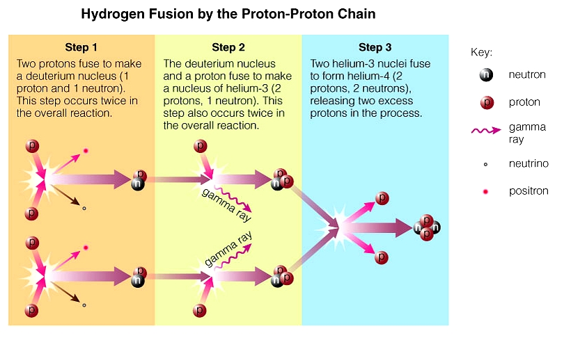

The Proton-Proton Chain Reaction
Hydrogen Fuses to Helium in Three Steps
The phrase "one of the protons 'turns into' a neutron" does not sound very scientific — it sounds more like magic. Under certain conditions, protons and neutrons spontaneously undergo what is called Beta decay. A proton will lose a positron and an electron neutrino. A positron is the "anti-particle" of an electron in that it has the same mass as an electron, but has a positive charge. A neutrino is a neutral particle that has about 1/500,000 the mass of an electron. For this discussion we will ignore the neutrino in the process of Beta decay. There are two important points about the Beta decay of a proton to a neutron:
- The proton gives up its positive charge by emitting a positron.
- The observation of proton Beta decay indicates that protons have a substructure. That is, a proton is not a fundamental particle.
Once we understand the Beta decay of a proton to a neutron, we can now look at the full process of how hydrogen is fused to form helium. As stated before, this process is called the proton-proton chain reaction.

- Step 1 in the figure above shows two sets of two hydrogen nuclei fusing to form two deuterium (one proton and one neutron) nuclei. One of the protons in each reaction becomes a neutron through Beta decay.
- Step 2 in the figure above shows that two more sets of hydrogen nuclei fuse with the two newly formed deuterium nuclei to form an isotope of helium called helium-3. This isotope, helium-3, contains two protons and one neutron.
- Step 3 shows the two helium-3 nuclei fusing and at the same time two protons are ejected in the process. This final fusion process forms stable helium-4 with two protons and two neutrons.
So you can see from the figure that we start in Step 1 with four protons, add two more protons in Step 2, and eject two protons in Step 3. So the net result is four protons in, and one helium-4 out. Technically we do lose one negligible neutrino in Step 1 and some gamma rays (light at a certain frequency) in Step 2. But generally speaking, it takes four protons to form one helium.
It has been verified by observation that our own sun as well as all other similarly sized stars use the proton-proton chain to fuse hydrogen to form helium. For stars that are larger than the sun, another process called the Carbon-Nitrogen-Oxygen (CNO) cycle is used.